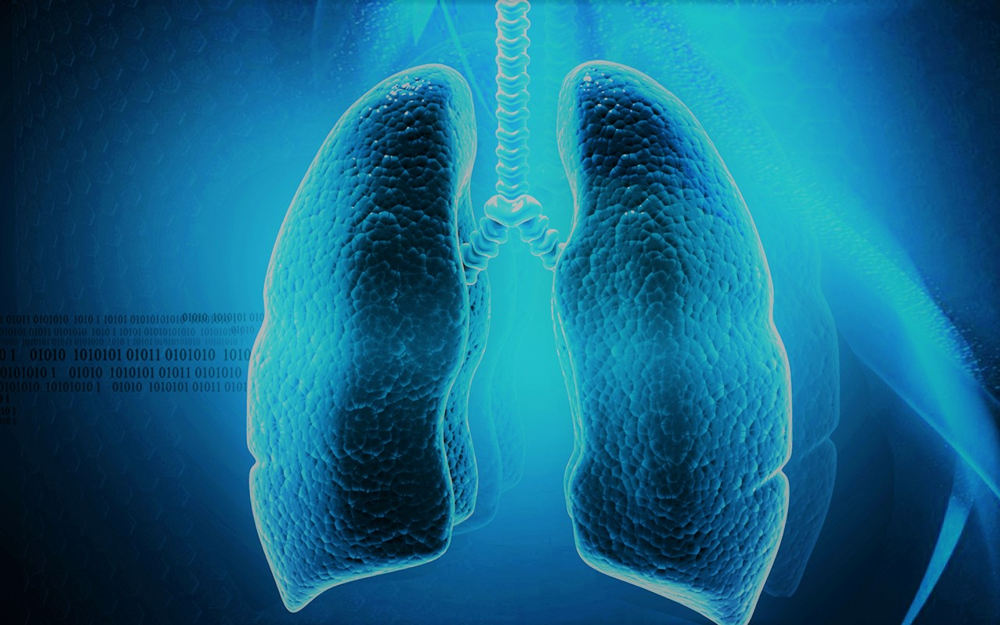
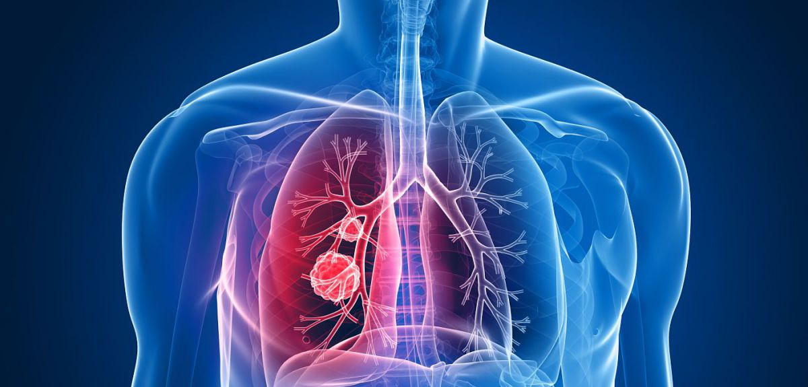
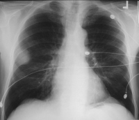

Bronchial Adenoma is a rare type of cancer that starts in the mucous glands and ducts of the lung airways (bronchi) or windpipe (trachea), and in the salivary glands. Although the word adenomameans a noncancerous tumor, most bronchial adenomas are cancer and can spread to other parts of the body. Yet they often grow slowly and are treatable
Types:-
Carcinoids (2 types of bronchial neuroendocrine tumors) account for 85% of bronchial gland tumors and 1-2% of all lung malignancies
Adenoid cystic carcinoma (cylindroma), which commonly arises in a salivary gland, accounts for 10% of bronchial adenomas.
Mucoepidermoid carcinomas account for 1-5% of all bronchial gland tumors (0.1-02% of all lung tumors).
SYMPTOMS:-
Dyspnea (difficulty breathing) is caused by partial obstruction of the windpipe or large bronchi.
Stridor (abnormal sound produced by turbulent flow of air through a narrowed part of the larger airways) can be present when the adenoma is in the windpipe or large bronchi
Cough, fever, and sputum production result from complete obstruction of the bronchi, leading to collapse, infection, and destruction of the lung tissue on the other side of the obstruction.


Exams and Tests for Bronchial Adenoma
Chest X-ray films may demonstrate a nodule (less than 3 cm in diameter) or a larger mass of tumor. Oblique-view chest X-ray films may improve the ability to detect central lesions on chest X-ray films.
Computed tomography (CT) scan of the chest allows a better assessment of the tumor. The doctor can tell how big the tumor is, exactly where it is located in the lung, and whether it looks like it is spreading to the lymph nodes
Octreotide nuclear scan is a test used to detect carcinoid tumors and to determine sites to which they have spread.
CT-guided fine-needle aspiration: If a peripheral nodule is present, a needle may be inserted through the chest wall, between the ribs, and placed in the nodule.
Bronchoscopy: This procedure is used to visualize the inside of the trachea (windpipe) and large airways in the lung for abnormal growths. After giving the person a sedative, the doctor numbs the throat and windpipe with local anesthesia
Bronchial Adenoma Picture

Prevention
Your treatment might put you into remission. This means your doctors can't find any cancer left in your body and you have no symptoms.